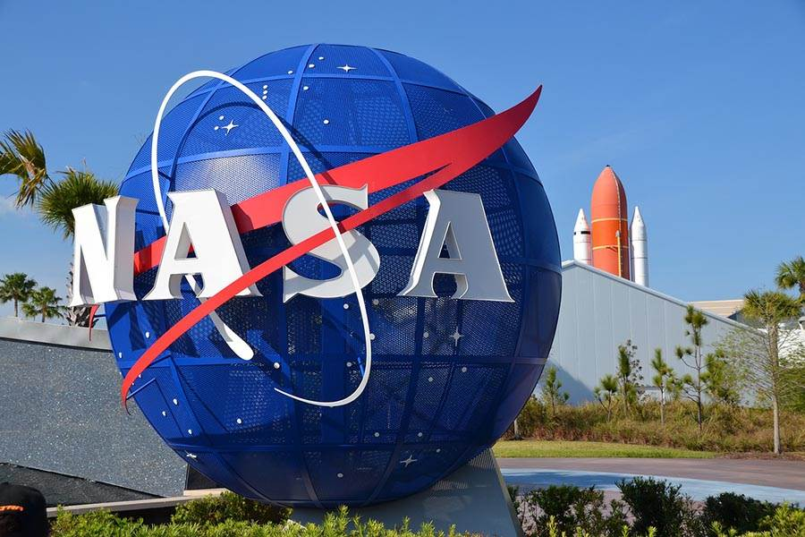

Trabalho API
🔭 Imagem Astronômica do Dia (APOD)
A Administração Nacional da Aeronáutica e Espaço (NASA) é a agência espacial dos EUA. Informe uma data abaixo para ver a foto astronômica do dia (APOD):
☄️ Asteroides Próximos à Terra:
Verifique a lista de objetos próximos à Terra (Near-Earth Objects - NEOs) na data selecionada.